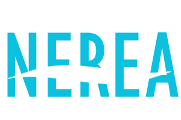

Mappa dei rifugi climatici di Taranto
Cos'è un rifugio climatico?
Secondo il vocabolario Treccani un rifugio climatico è un luogo pubblico o privato ad accesso libero e gratuito (per es. biblioteca, museo, parco cittadino, centro commerciale ecc.) in grado di offrire ristoro dalle temperature estreme che si verificano di estate.
Chi gestisce questo sito?
Questo non è un sito ufficiale, è stato realizzato da volontari che hanno a cuore la salute dei più deboli e che vogliono mettere Taranto in pari con i comuni di Milano, Bologna, Firenze e Napoli che già si sono dotati di questo strumento.
Posso contribuire anche io?
Certo. Puoi segnalare un rifugio climatico a questo link, o farci sapere se riscontri malfunzionamenti scrivendo a questo indirizzo.
Contributori: Daniela Russo, Davide Nardella, Valentina Cosa